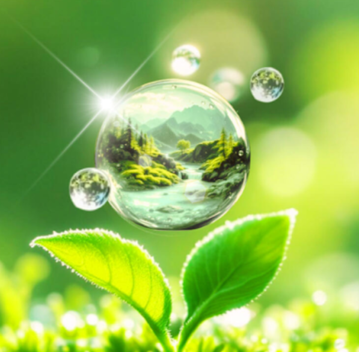

Note : Les informations contenues dans cet article sont partagées à titre éducatif et informatif uniquement.
Elles ne constituent pas un conseil médical. Consultez un professionnel de santé pour des conseils personnalisés.
Pourquoi l'hydratation naturelle est essentielle à votre bien-être 🌱
L'eau nettoie et hydrate tous les organes du corps humain. 🌊
Indispensable à la vie, l'eau représente 80% du poids de notre corps. 💦
Beaucoup confondent véritable hydratation et consommation de boissons commerciales, influencés par des messages publicitaires omniprésents.
Les boissons énergisantes comme Red Bull, Coca-Cola, thé, café, ou alcools ne sont pas hydratantes. ⚠️
Notre véritable HYDRATATION provient de l'eau potable peu minéralisée et des fruits et légumes qui nous offrent leur eau vitalisée naturellement. 🍎🥒
Comment choisir l'eau idéale pour votre santé quotidienne 🔍
Une eau trop chargée en minéraux ne contient pas d'enzymes vivantes, et ces minéraux n'ont pas bénéficié de la vitalisation par le règne végétal.
Cette surcharge minérale impose un travail supplémentaire à nos reins. 🧪
Ce n'est pas un hasard si les entraîneurs d'animaux de course privilégient l'eau la plus pure possible pour leurs bêtes.
Chez les nourrissons, dont le système digestif est encore immature, les eaux fortement minéralisées peuvent même provoquer des diarrhées. 👶
Préférez une eau faiblement minéralisée et trouvez vos apports minéraux dans une alimentation vivante issue d'une agriculture respectueuse des cycles naturels. 🌿
En France, des eaux comme la Rosée de la Reine, Mont Roucous, Volcania ou Chanflor sont naturellement faiblement minéralisées.
Idéalement, la minéralisation totale (résidu sec) devrait être inférieure à 200 mg/L, avec un pH entre 6 et 8, sans chlore ni micro-organismes, et pauvre en nitrates. 📊
7 bienfaits prouvés d'une hydratation optimale pour votre corps 🌟
- 💪 La meilleure hydratation provient de l'eau vitale des fruits et légumes frais
- 🧹 Elle facilite l'élimination naturelle des toxines et purifie l'organisme
- 🚚 Elle assure le transport des nutriments essentiels (protéines, glucides, lipides, minéraux, vitamines, enzymes)
- 🧠 Une hydratation adaptée contribue à réduire les mécanismes d'auto-sabotage au niveau subconscient
- ⚡ Boire suffisamment améliore la communication électrique entre les neurones
- 💆♀️ Une bonne hydratation prévient les maux de tête et améliore la concentration
- 🌡️ Elle aide à réguler la température corporelle et maintient la souplesse des articulations
Il est important d'être à l'écoute de son corps sans attendre la sensation de soif pour s'hydrater. 👂
Personnalisez votre hydratation selon vos besoins spécifiques 📝
La quantité d'hydratation doit être personnalisée selon chaque situation.
Les besoins varient considérablement entre une personne âgée sédentaire vivant en climat tempéré et un adolescent actif en région chaude. 👵👦
Un adulte aux habitudes alimentaires équilibrées saura naturellement réguler son hydratation, tant en quantité qu'en qualité.
Guide pratique : 5 conseils d'experts pour une hydratation optimale 📋
- 🌅 Dès le réveil, buvez une quantité généreuse d'eau pure ou une préparation magnésienne avec du jus de citron
- 🌙 Limitez votre consommation d'eau le soir avant le coucher pour éviter les réveils nocturnes
- 🍽️ Avant le repas, buvez modérément environ 30 minutes avant de manger pour préparer votre système digestif
- 🥗 Pendant le repas, limitez-vous à deux verres maximum pour ne pas diluer les sucs digestifs
- 💧 Privilégiez une eau de qualité : Choisissez une eau faiblement minéralisée, naturellement pure et exempte de chlore
Les défis de l'eau potable au 21e siècle : vigilance et solutions 🚨
Focus sur la situation en Guyane : un cas d'étude révélateur 🌴
La qualité de l'eau potable devient un enjeu majeur dans de nombreuses régions du monde.
Des analyses récentes révèlent la présence de contaminants préoccupants dans l'eau du robinet, notamment des trihalométhanes (composés potentiellement cancérigènes) et de l'aluminium. 🔬
Depuis le début de l'année 2025, des analyses ont révélé des dépassements récurrents dans l'eau potable en Guyane, notamment des taux de trihalométhanes et d'aluminium largement au-dessus des normes fixées par l'Organisation mondiale de la santé (OMS).
Les trihalométhanes se forment lorsque le chlore utilisé pour désinfecter l'eau réagit avec des matières organiques naturellement présentes.
Ces composés sont classés comme potentiellement cancérigènes par le Centre International de Recherche sur le Cancer (CIRC).
Parallèlement, des taux alarmants d'aluminium ont été détectés, atteignant dans certaines communes comme Saint-Georges des concentrations jusqu'à 50 fois supérieures à la norme.
Entre janvier et juillet 2025, plusieurs communes ont été touchées :
- Montsinéry
- Cayenne
- Matoury
- Macouria
- Sinnamary
Quels sont les contaminants à surveiller dans votre eau ? ⚠️
- Trihalométhanes : formés lorsque le chlore utilisé pour désinfecter l'eau réagit avec des matières organiques
- Aluminium : peut provenir des traitements de l'eau ou de la pollution industrielle
- PFAS ("polluants éternels") : substances chimiques persistantes utilisées dans de nombreux produits industriels
- Nitrates : provenant principalement des engrais agricoles
- Résidus médicamenteux : de plus en plus présents dans les eaux urbaines
La crise mondiale de l'eau : un défi collectif 🌐
Aujourd'hui, l'accès à une eau véritablement pure devient un luxe face à une pollution croissante.
Nous nous trouvons piégés dans un cycle pernicieux :
- 🔄 Plus l'eau est polluée, plus nous recourons à des filtres coûteux.
- 🔄 Plus nous acceptons de payer pour filtrer notre eau, plus nous normalisons cette situation anormale.
- 🔄 Plus cette situation devient "normale", moins nous exigeons des changements systémiques.
- 🔄 Moins nous réclamons de changements collectifs, plus l'eau continue d'être polluée.
Solutions pratiques pour une hydratation saine au quotidien 💡
Pour votre consommation personnelle :
- 🍶 Utilisez une carafe filtrante de qualité et changez régulièrement les filtres
- 🥒 Augmentez votre consommation d'aliments riches en eau (concombres, pastèques, agrumes)
- 🧴 Transportez votre eau dans des contenants en verre ou en acier inoxydable, évitez le plastique
- 🌱 Essayez les techniques naturelles de dynamisation de l'eau (vortex, cristaux)
- 🧪 Testez périodiquement la qualité de votre eau avec des kits disponibles en ligne
AGISSEZ MAINTENANT : 5 habitudes transformatrices pour votre hydratation 👊
- 📅 Établissez un programme d'hydratation naturel : Écoutez les signaux de votre corps et intégrez des moments d'hydratation dans votre journée
- 🔄 Créez des rituels d'hydratation : Associez la consommation d'eau à des activités quotidiennes
- 🧘♀️ Pratiquez l'hydratation consciente : Prenez le temps d'apprécier chaque gorgée d'eau
- 🥗 Enrichissez votre eau naturellement : Ajoutez des tranches de concombre, de citron ou des feuilles de menthe
Vers un cycle vertueux pour notre santé et notre planète 🌱
En transformant notre approche de l'hydratation, nous créons un cycle vertueux :
- 🔄 Plus nous sommes conscients de l'importance de l'eau, plus nous en prenons soin collectivement.
- 🔄 Plus notre environnement est sain, plus nous développons nos propres ressources.
- 🔄 Plus nous développons nos ressources, plus nous obtenons ce que nous voulons facilement.
Conclusion : l'eau, trésor à préserver et célébrer 🏆
Une hydratation optimale avec une eau de qualité est fondamentale pour notre santé et notre bien-être.
En adoptant des habitudes conscientes d'hydratation et en restant vigilants quant à la qualité de notre eau, nous investissons dans notre capital santé tout en contribuant à la préservation de cette ressource précieuse.
La situation en Guyane nous rappelle que l'accès à une eau saine n'est pas acquis et nécessite une vigilance constante.
Alors, êtes-vous correctement hydraté ? Quelles habitudes d'hydratation saine avez-vous adoptées ? 💭
Partagez votre expérience dans les commentaires et rejoignez le mouvement pour une eau saine et accessible à tous !
Avertissement : Les informations sont à titre informatif.
Consultez un professionnel de santé pour des conseils personnalisés. L'auteur décline toute responsabilité.